Machine Deep Learning in a Nutshell
Modern machine learning methods help people in making decisions and predictions from data. Like CAD, Computer-Aided Design, human is making use of computer for CADM, Computer-Aided Decision Making. Modern machine learning methods are important to human endeavor by advancing human knowledge to broader and deeper levels.
Here we will go through the basics and some advanced topics in the following sequences:
1) Predict from component factors, linear regression.
2) Make classification decisions by extending linear regression to logistical regression.
3) Patterns classification, and decision makings.
For a session with the ¡®challenge¡¯ icon below, you can skip it without the loss of reading continually, but it will help you to understand the topic deeper for real-life applications.
Predict from component factors, linear regression
Human predicts from the knowledge of some known components to an unknown future and makes the decision. We will look at the sky and decide whether we should bring an umbrella. If the sky is dark and cloudy, most people will get an umbrella. A bank will base on a person¡¯s income, job nature, age, and other component factors to decide on approving a credit card for him or not.
In the simplest mathematical term, it can be described by a simple equation as following.
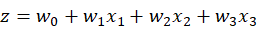 Equ 1.0
For example 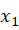is income, is job nature and 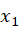 is the age. We treat each factor as a predictor for the outcome z. For each factor, we weight it with some weights 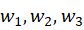. Furthermore, when all the weighted stuff add together, it must be greater than a threshold value for approving a credit card. Therefore if we select 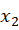 as a big enough negative number (say -100), then all the weighted sum must greater than 100 to make the outcome z positive. If z is positive, the bank will approve the credit card. Equ 1.0 is called linear regression [3].
The challenge here is how to select the weights (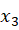) such that the above simple equation can be used for the bank¡¯s manager as a guiding rule for approving the credit card. Similarly, if we can use the same approach to determine insurance fees on a continuous basis, instead of approving or disapproving. However, the weights to achieve this will be different for the credit card approval process. For a more detailed treatment on the credit card example, please refer to [1, 2] .
Sometimes we can find the weights by analytical matrix algebra methods, but I will show only numerical methods here, as it can be used for a broader spectrum of problems by modern software tools.
Most, if not all, of the machine deep learning methods use this as the basic unit to build a highly complicated system from an online store recommendation system to Google¡¯s Alpha Go and Alpha Zero. Today, similar methods are using from the financial trading system, genes classification to the covid-19 virus classification system. Human¡¯s capabilities in understand the universes are extending to another limit never happened in our history before.
The system describes by Equ 1.0 can be built easily by Tensorflow Keras as following: Dense(units=1, name=¡®z¡¯)
Google Tensorflow called it Dense layer, and it is one unit in a layer. Pictorially, it can be represented by a circle with weights around it.
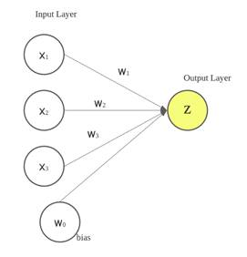
Figure 1.1
If we have 10 units in parallel, it can be described as the following:
Dense(10, name=¡®Layer with 10 units¡¯)
By making use of this Dense layer, a very complicate deep learning network can be built easily. If you prefer PyTorch¡¯s syntax, you can refer to [4], which is called torch.nn.Linear() instead.
The layers can be further cascaded in serial to form a deeper network.
,
You can skip the following section, except you want to know how a deep learning network can be precisely described mathematically.
The parallel cascaded units will dichotomize (divide into two parts) input space differently. The serially cascaded layers will pick-up the previous layer¡¯s outputs and repeat the dichotomy division process. When the breath of parallel cascade and depth of serial cascade are big enough to match the dataset¡¯s complexity (input space), it can classify and represent complicated problem very effectively. Figure 1.2 shows a section of a deep network.
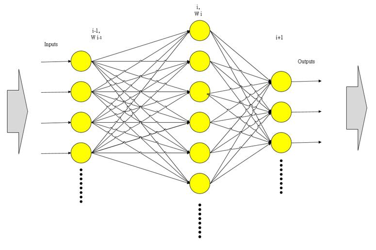
Figure 1.2
A deep network is become a hierarchical composite model where each layer (figure 3.1) applies a linear transformation followed with a nonlinear function [24] to the preceding layer.
Let 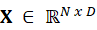 be the input data,
where each row of 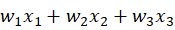 is a D-dimensional
data point and N is the number of training sample in the image space and  be a matrix
representing a linear transformation applied to the output of a layer i-1, 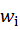, to obtain a 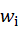 dimensional representation
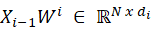 at layer i.
For example, each column of 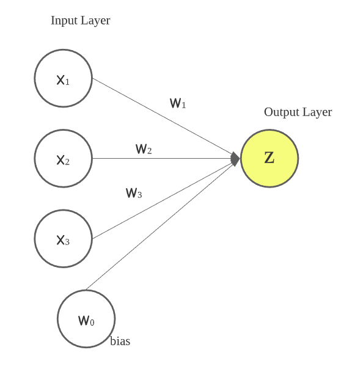 could represent a
convolution with some filter in convolutional neural networks or the
application of a linear classifier in fully connected networks.
be a matrix
representing a linear transformation applied to the output of a layer i-1, 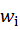, to obtain a 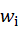 dimensional representation
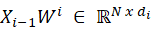 at layer i.
For example, each column of 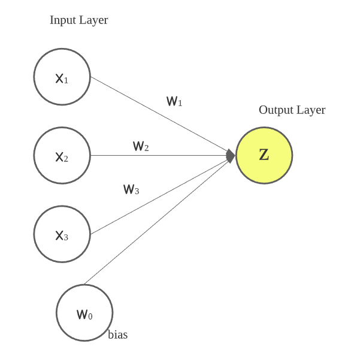 could represent a
convolution with some filter in convolutional neural networks or the
application of a linear classifier in fully connected networks.
Let 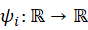 be a
nonlinear activation function, e.g. a sigmoid 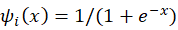 or a rectified
linear unit 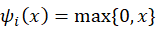 . This non linearity
is applied to each entry of 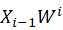 to generate the i-th
layer of a neural network as  . The output 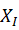 of the network is
thus given by:
. The output 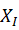 of the network is
thus given by:
 )
)
¨D Equ 1.2
When output dimensions of the network is C that equal to , 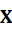 will be an N x C matrix and C is the number of classes for a pattern recognition problem. Notice also that the mapping can be seen as a function of all the network weights 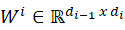 with a fixed input and where the I layer is the last layer, output layer, with the indexed number I. We can view the composite mapping as a function of the input data with weights 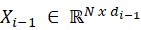, . Furthermore, we can say that the weights in of a network trained by the input characterized the network. This characterized network is defined and say learned some conceptual knowledges from the input dataset . It can be easily built as a class object by modern object orientated programming language together with a defined training method.
We can form and vary a deep-learning network by varying I (number of layers), (width of the layer i) and (activation function in layer i) to form different types of architectures. When we use different kinds of for different layers, we can take them into account and see all the activation functions as 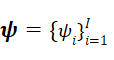. Then 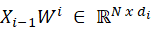 is an extended description to cover varying activation functions.
Reference:
[1] Y.S. Abu-Mostafa, M. M. Ismail, H.T. Lin, Learning From Data, a short course.
[2] T.Hastie, R. Tibshirani, J. Friedman, The Elements of Statistical Learning: Data Mining, Inference, and Prediction, Second Edition.
[4] https://pytorch.org/tutorials/beginner/examples_nn/two_layer_net_nn.html